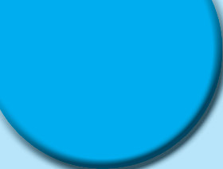
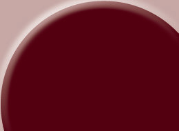
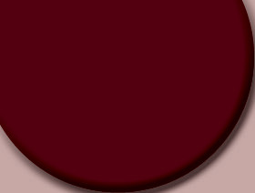
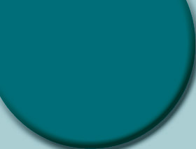
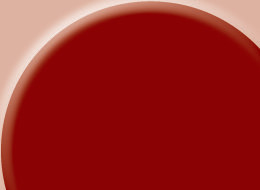
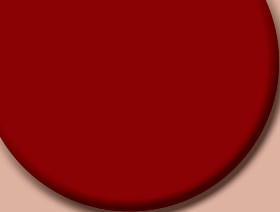
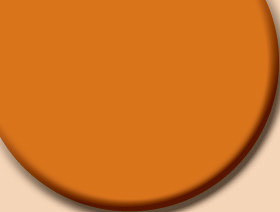
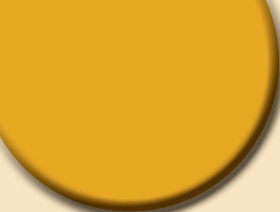

Cream _____________ and crisp apple strudels
_____________and _____________and schnitzel with noodles
_____________ that fl y with mood on _____________
These are a few of my favourite things
Adapted from “My Favourite Things” by Jullie Andrews
From the song:
(i) Summarise the singer’s favourite things in two sentences.
(ii) Write a two-stanza poem about your favourite things.
(b) Listen to a speech about environmental conservation from your teacher. Then, summarise it using the following 5Ws and H graphic organiser.








When should we take action to protect the environment?
Environmental
Conservation
How can individuals conserve the environment?
Where does plastic pollution end up?
Who is responsible for environmental conservation?
What is the major environmental issue discussed in the speech?
Why is it important to conserve the environment?